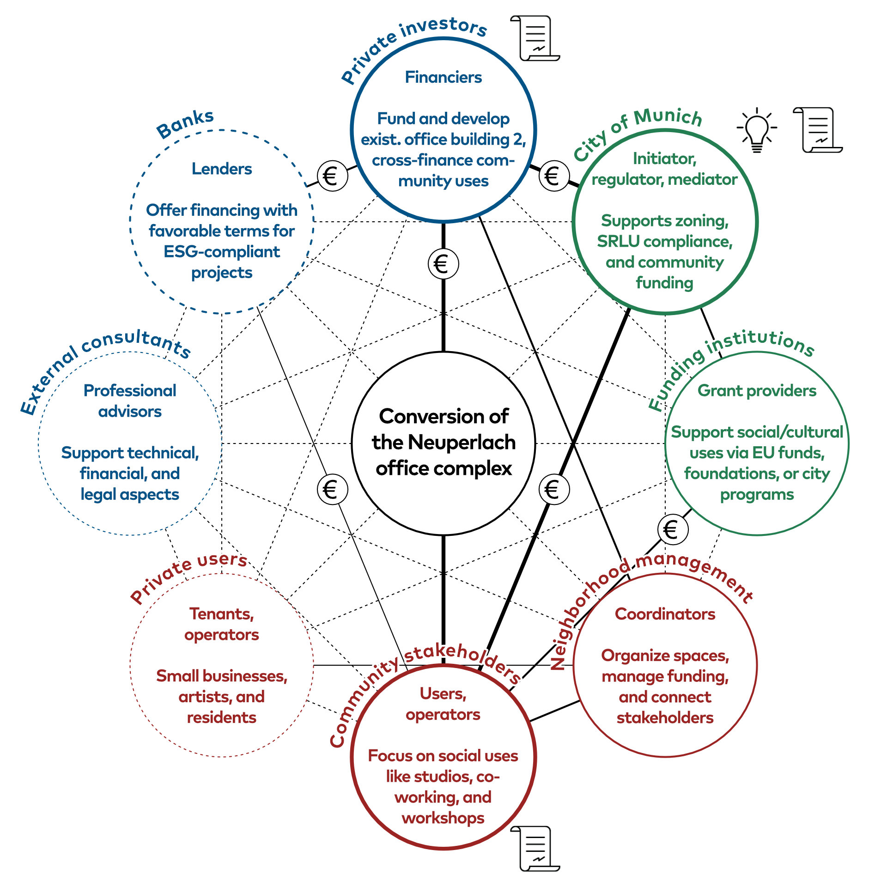

Nachhaltiges Bauen M.Sc.
2025
Community and developer approaches to residential adaptive reuse: A semi-quantitative study on integration
⬤ Adaptive Reuse trägt entscheidend zu den dringlichsten EU-Nachhaltigkeitszielen –
Kreislaufwirtschaft, Klimaneutralität und Wohnungsversorgung – bei. Die Masterarbeit im Rahmen
des EU-Projekts Creating NEBourhoods Together analysiert die erfolgreiche Integration
verschiedener Stakeholdergruppen mittels Fallstudien und Expert:innen-Workshops.
Die Ergebnisse
offenbaren klare Prioritätenunterschiede: Genossenschaften und gemeinnützige Organisationen
priorisieren bezahlbaren Wohnraum sowie Gemeinschaftsräume, private Investoren und kommunale
Eigentümer hingegen lukratives Gewerbe mit höheren Gebäudestandards.
Eine
Public-Private-People-Partnership (PPPP) vereint öffentliche Förderung, private Querfinanzierung
und zivile Aneignung für nachhaltige Transformation.
⬤ Adaptive reuse makes a decisive contribution to the EU's most pressing sustainability
goals—circular economy, climate neutrality, and housing provision. The master's thesis written
as part of the EU project Creating NEBourhoods Together analyzes the successful integration of
various stakeholder groups using case studies and expert workshops.
The results
reveal clear differences in priorities: cooperatives and non-profit organizations prioritize
affordable housing and community spaces, while private investors and municipal owners prioritize
lucrative commercial properties with higher building standards.
A
public-private-people partnership (PPPP) combines public funding, private cross-financing, and
civic appropriation for sustainable transformation.
Dipl.-Ing. J. Staudt
Dipl.-Ing. C. Schade